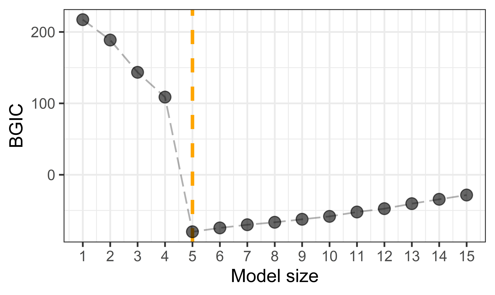

../vignettes/v09-fasterSetting.Rmd
v09-fasterSetting.RmdThe generic splicing technique certifiably guarantees the best subset can be selected in a polynomial time. In practice, the computational efficiency can be improved to handle large scale datasets. The tips for computational improvement include:
family = "gaussian" or family = "mgaussian";family = "binomial", family = "poisson", family = "cox".This vignette illustrate the first three tips. For the other tips, they have been efficiently implemented and set as the default in abess package.
We sometimes meet with problems where the \(N \times p\) input matrix \(X\) is extremely sparse, i.e., many entries in \(X\) have zero values. A notable example comes from document classification: aiming to assign classes to a document, making it easier to manage for publishers and news sites. The input variables for characterizing documents are generated from a so called ``bag-of-words’’ model. In this model, each variable is scored for the presence of each of the words in the entire dictionary under consideration. Since most words are absent, the input variables for each document is mostly zero, and so the entire matrix is mostly zero. Such sparse matrices can be efficiently stored in R with a sparse column format via the Matrix package. And the sparse matrix can be directly used by our abess package for boosting the computational efficient.
ABESS algorithm is ideally set up to exploit such sparsity. The \(O(N)\) inner-product operations when computing forward sacrifice can exploit the sparsity, by summing over only the non-zero entries. For computing backward sacrifice, the sparsity also facilitate solving the convex optimization under a given support set. The following example demonstrates the efficiency gain from the sparse matrix. We first generate a input matrix whose 90% entries are 0.
## Loading required package: Matrix
num <- 1000
p <- 100
sparse_ratio <- 0.9
x <- matrix(rnorm(num * p), nrow = num)
zero_entry <- matrix(rbinom(num * p, size = 1, prob = sparse_ratio), nrow = num)
x[zero_entry == 1] <- 0
y <- x %*% matrix(c(rep(3, 5), rep(0, p - 5)))
x <- Matrix(x)
head(x[, 1:10])## 6 x 10 sparse Matrix of class "dgCMatrix"
##
## [1,] . . . . . . . . . .
## [2,] . . . . 1.2350837 . . . . .
## [3,] . . . . -0.1751446 2.2964031 . . . .
## [4,] . . . . . -0.7947987 0.3404454 . . .
## [5,] . . . . . . . . . .
## [6,] . . . . . . . . . .Then, we apply ABESS algorithm on Matrix x and record the runtime in t1:
library(abess)
t1 <- system.time(abess_fit <- abess(x, y))We compare the runtime when the input matrix is dense matrix:
## [,1] [,2] [,3] [,4] [,5] [,6]
## [1,] 0 0 0 0 0.0000000 0.0000000
## [2,] 0 0 0 0 1.2350837 0.0000000
## [3,] 0 0 0 0 -0.1751446 2.2964031
## [4,] 0 0 0 0 0.0000000 -0.7947987
## [5,] 0 0 0 0 0.0000000 0.0000000
## [6,] 0 0 0 0 0.0000000 0.0000000
t2 <- system.time(abess_fit <- abess(x, y))
rbind(t1, t2)[, 1:3]## user.self sys.self elapsed
## t1 1.309 0.030 1.354
## t2 1.640 0.164 1.810From the comparison, we see that the time required by sparse matrix is visibly smaller, and thus, we suggest to assign a sparse matrix to abess when the input matrix have a lot of zero entries.
The following is a typical ``model size v.s. BGIC’’ plot.

The \(x\)-axis is model size, and the \(y\)-axis is BGIC’s value recorded in group splicing algorithm for linear model. The entries of design matrix \(X\) are i.i.d. sampled from \(\mathcal{N}(0, 1)\), and the matrix shape is \(100 \times 200\). The error term \(\varepsilon\) are i.i.d. \(\mathcal{N}(0, \frac{1}{2})\). Take the two adjacent variables as one group, and set the true coefficients \(\beta=(1, 1, 1, 1, 1, 1, -1, -1, -1, -1, 0, \ldots, 0)\). The orange vertical dash line indicates the true group subset size.
From this Figure, we see that the BGIC decreases from \(T=1\) to \(T=5\), but it increases as \(T\) larger than \(5\). In other words, the BGIC path of SGSplicing algorithm is a strictly unimodal function achieving minimum at the true group subset size \(T = 5\). Motivated by this observation, we suggest to recruit a heuristic search based on the golden-section search technique, an efficient method for finding the extremum of a unimodal function, to determine support size that minimizing BGIC. Compared with searching the optimal support size one by one from a candidate set with \(O(s_{\max})\) complexity, golden-section reduce the time complexity to \(O(\ln{(s_{\max})})\), giving a significant computational improvement.
The code below exhibits how to employ the golden search technique with abess package:
synthetic_data <- generate.data(n = 500, p = 100,
beta = c(3, 1.5, 0, 0, 2, rep(0, 95)))
dat <- cbind.data.frame("y" = synthetic_data[["y"]],
synthetic_data[["x"]])
t1 <- system.time(abess_fit <- abess(y ~ ., data = dat, tune.path = "gsection"))
str(extract(abess_fit))## List of 7
## $ beta :Formal class 'dgCMatrix' [package "Matrix"] with 6 slots
## .. ..@ i : int [1:3] 0 1 4
## .. ..@ p : int [1:2] 0 3
## .. ..@ Dim : int [1:2] 100 1
## .. ..@ Dimnames:List of 2
## .. .. ..$ : chr [1:100] "x1" "x2" "x3" "x4" ...
## .. .. ..$ : chr "3"
## .. ..@ x : num [1:3] 3.04 1.49 1.91
## .. ..@ factors : list()
## $ intercept : num -0.0679
## $ support.size: int 3
## $ support.vars: chr [1:3] "x1" "x2" "x5"
## $ support.beta: num [1:3] 3.04 1.49 1.91
## $ dev : num 1.49
## $ tune.value : num 225The output of golden-section strategy suggests the optimal model size is accurately detected. Compare to the sequential searching, the golden section reduce the runtime because it skip some support sizes which are likely to be a non-optimal one:
t2 <- system.time(abess_fit <- abess(y ~ ., data = dat))
rbind(t1, t2)[, 1:3]## user.self sys.self elapsed
## t1 0.039 0.002 0.042
## t2 0.277 0.038 0.316In machine learning, early stopping is a helpful strategy not only avoid overfitting but also reducing training time. For the early-stopping implementation in abess, validation is used to detect when overfitting starts during performing adaptive best subset selection; training is then stopped even though the best subset under certain larger support size haven’t found. We give an example to demonstrate the helpfulness of early stopping in decreasing runtimes. (Do not finish, the early stopping do not available in cpp)
t1 <- system.time(abess_fit <- abess(y ~ ., data = dat, early.stop = TRUE))
abess_fit## Call:
## abess.formula(formula = y ~ ., data = dat, early.stop = TRUE)
##
## support.size dev GIC
## 1 0 17.280099 1424.7777
## 2 1 7.791728 1034.9445
## 3 2 3.963347 705.3708
## 4 3 1.490205 224.6964
## 5 4 1.467577 225.4590
## 6 5 1.445940 226.4459
## 7 6 1.432624 230.2331
## 8 7 1.418358 233.6423
## 9 8 1.404924 237.2973
## 10 9 1.395503 242.3464
## 11 10 1.386509 247.5264
## 12 11 1.378860 253.1738
## 13 12 1.369313 258.1130
## 14 13 1.363112 264.2568
## 15 14 1.354559 269.5226
## 16 15 1.349460 276.0503
## 17 16 1.342953 282.0464
## 18 17 1.338077 288.6412
## 19 18 1.335379 296.0453
## 20 19 1.328946 302.0437
## 21 20 1.322636 308.0772
## 22 21 1.317662 314.6067
## 23 22 1.315003 322.0100
## 24 23 1.307019 327.3782
## 25 24 1.305670 335.2750
## 26 25 1.300286 341.6222
## 27 26 1.296708 348.6575
## 28 27 1.295496 356.6031
## 29 28 1.292647 363.9154
## 30 29 1.285055 369.3835
## 31 30 1.280376 375.9729
## 32 31 1.276758 382.9712
## 33 32 1.273704 390.1868
## 34 33 1.272467 398.1142
## 35 34 1.268332 404.9001
## 36 35 1.265358 412.1395
## 37 36 1.261647 419.0841
## 38 37 1.259729 426.7366
## 39 38 1.264535 437.0538
## 40 39 1.258498 443.0740
## 41 40 1.255934 450.4676
## 42 41 1.250641 456.7690
## 43 42 1.249271 464.6346
## 44 43 1.245465 471.5218
## 45 44 1.244823 479.6775
## 46 45 1.244839 488.0970
## 47 46 1.241505 495.1693
## 48 47 1.238645 502.4292
## 49 48 1.235082 509.4021
## 50 49 1.230958 516.1432
## 51 50 1.226956 522.9279
## 52 51 1.226910 531.3226
## 53 52 1.223281 538.2545
## 54 53 1.223886 546.9150
## 55 54 1.220571 553.9721
## 56 55 1.219292 561.8611
## 57 56 1.219155 570.2183
## 58 57 1.215722 577.2212
## 59 58 1.213850 584.8642
## 60 59 1.213127 592.9793We can see that ABESS algorithm stop when support size is 4. This is because the GIC value (can be considered as an assessment in validation set) do not increase when support size reach to 3, and thus, the program early terminate. This result is match to our simulation setting. Compare with the ABESS without early-stopping:
t2 <- system.time(abess_fit <- abess(y ~ ., data = dat))
rbind(t1, t2)[, 1:3]## user.self sys.self elapsed
## t1 0.281 0.040 0.321
## t2 0.282 0.042 0.324we can conclude that early-stopping brings fast computation and might maintain statistical guarantee.